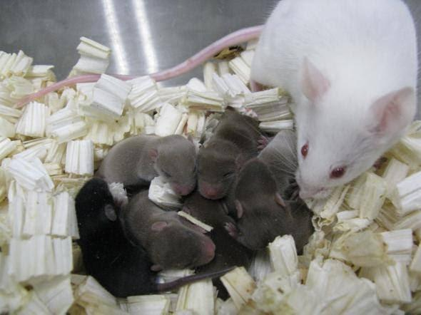

Archive · Greek science communication
A Sperm Bank in Space
What happens to freeze-dried mouse sperm after months of radiation exposure aboard the International Space Station?

Original Greek text
Εσύ το ήξερες ότι ο Διεθνής Διαστημικός Σταθμός (ISS) ήταν τράπεζα σπέρματος για 9 μήνες; Έγινε το εξής πείραμα: Σπερματοζωάρια από ποντικάκια αφυδατώθηκαν, καταψύχθηκαν και μεταφέρθηκαν στον ISS για 288 ημέρες. Ας το ξαναπώ. Για 288 ημέρες λίγο σπέρμα από ένα ποντίκι ανέτειλε και εδυε όπως ο ήλιος. Στη συνέχεια επιστράφηκαν στη Γη και συγκρίθηκαν με ίδια παγωμένα και αφυδατωμένα σπερματοζωάρια που απλώς δεν είχαν πάει ταξίδι στο διάστημα. Θυμήσου ότι η ακτινοβολία που τρως αν πας διακοπές στο Διεθνή Διαστημικό Σταθμό είναι κάπου εκατό φορές περισσότερη από αυτή που μπορεί να σου προκαλέσει μεταλλαγές όταν αράζεις στην αυλή σου. Έγινε ανάλυση των αποτελεσμάτων και παρατηρήθηκε ζημιά στο γενετικό υλικό λόγω της ακτινοβολίας. Παρόλα αυτά έγινε τεχνητή γονιμοποίηση του διαστημικού σπέρματος με ωράρια σε σωλήνα (in vitro δηλαδή) και εμφύτευση σε θηλυκιά ποντικίνα. Τα αποτελέσματα: Υγιέστατα μικρά, γόνιμα ποντικάκια. Όπως είχε πει και ο Ian Malcom “Life finds a way”, οι βλάβες φαίνεται να επιδιορθώθηκαν κατά την ανάπτυξη. Το επόμενο βήμα είναι να γίνει γονιμοποίηση στον ίδιο το διαστημικό σταθμό, ώστε να επιβεβαιωθεί αν είναι εφικτό να πραγματοποιηθούν τα πρώτα στάδια ανάπτυξης ενός εμβρύου και στη συνέχεια να γίνουν τα ίδια πειράματα με ανθρώπινο υλικό. Γιατί να τα κάνει κανείς τώρα όλα αυτα; Ο σκοπός αυτών των μελετών είναι να ερευνηθεί αν είναι δυνατή η διατήρηση κυττάρων, γαμετών και εμβρύων στο διαστημικό χώρο, έξω από την προστατευτική ατμόσφαιρα της Γης. Λόγοι; Πιθανή διαστημική τράπεζα σπέρματος σπάνιων ειδών υπό προστασία ή και φαγητού για τους αστροναύτες. Να μάθουμε αν μπορούμε να αναπαραχθούμε σε άλλους πλανήτες άμα και όταν πάμε. Εδώ στη Γη όλες οι φάρες των φυτών και ζώων έχεου εξελιχθεί με βάση κάποια βαρύτητα και κάποια ατμόσφαιρα. Στο διάστημα, στη Σελήνη ή στον Άρη είναι αλλιώς τα πράγματα. Εκτός από τα μηχανικά προβλήματα του διαστημικού σεξ, που ε, εντάξει είναι δυσκολάκι λόγω έλλειψης βαρύτητας (πες το λύνεις με εξωσωματική αυτό), θα πρέπει να ξέρεις αν τα διαστημικά μωρά σου μπορούν να επιβιώσουν χωρίς πολλές επιπλοκές στο DNA τους από την Κοσμική ακτινοβολία. https://www.nationalgeographic.com/?fbclid=IwY2xjawRuoJNleHRuA2FlbQIxMABicmlkETBaT2hISEI1S3NJN1pDZmpqc3J0YwZhcHBfaWQQMjIyMDM5MTc4ODIwMDg5MgABHg1aZXDwA6oDb77XmHiBCY8lwAJ_ctg2FB7qyAyt0O-A07ZS4le0cZ_yzdOM_aem_iLvpMPG9PZsu6jex8Oe7Ng